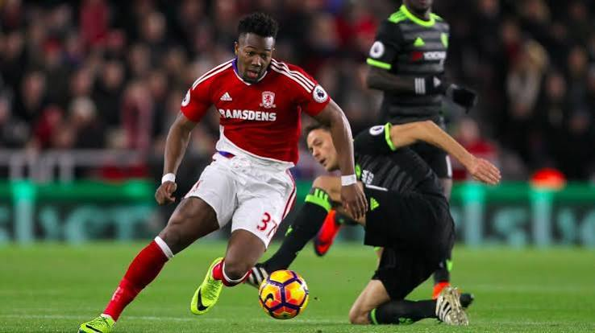
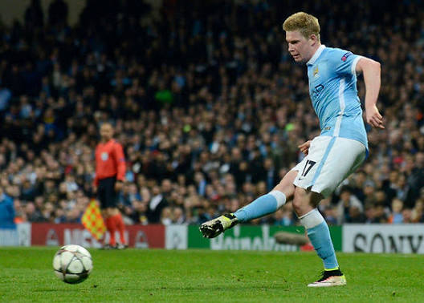
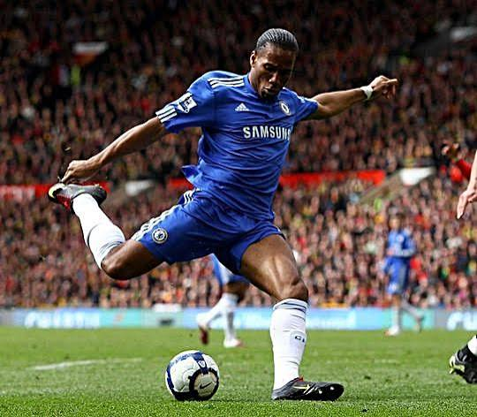
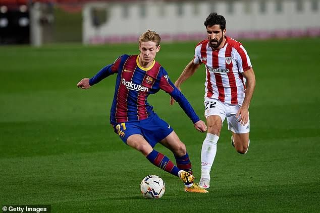

Technical Training
Technical ability is one of the most important parts of becoming a successful soccer player. Consistent practice improves your confidence, speed of play, and overall performance during matches.
This page focuses on improving dribbling, passing, first touch, shooting, and ball mastery through structured drills and quality resources.

Dribbling
Improve close control, change of direction, and confidence when taking on defenders.
Watch Dribbling Drills
Passing & First Touch
Develop accurate passing and a better first touch using wall passing drills and partner exercises.
Watch Passing Drills
Shooting
Learn proper shooting technique, finishing, volleys, and one-touch finishing exercises.
Watch Shooting Drills
Ball Mastery
Build confidence on the ball with daily footwork routines and coordination exercises.
Watch Ball Mastery